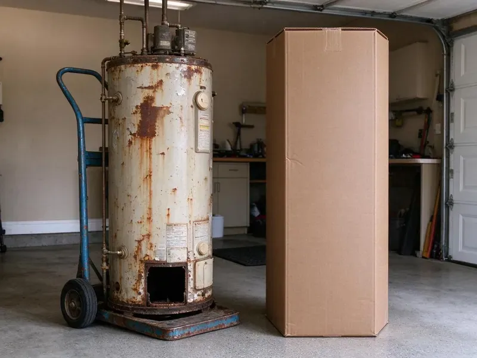

Pipe Replacement in Norwich, CT
We replace failing water and drain pipes across Norwich, CT with attic-routed lines, small wall openings and thorough cleanup.
- Expert, Certified Plumbers
- Flexible Repipe Scheduling
- Quick, Dependable Service
- Permits and Inspections Handled

Need New Pipes? Call the Pros in Norwich, CT.
We cover floors and furniture and clean up at the end of every workday.
Pipe Replacement in Norwich, CT for Aging and Leaking Plumbing
GLV Plumbing specializes in comprehensive pipe replacement services for homes and businesses across Norwich, CT. Whether you are dealing with persistent leaks, low water pressure, or discolored water, our licensed plumbers can diagnose the issue and provide durable solutions.
Our expertise includes:
- Cast iron and failing ABS drain line replacement
- Galvanized, polybutylene and pinhole-leak copper replacement
- Targeted pipe section replacement

Additional Plumbing Replacement Services in Norwich, CT
When repairs are no longer enough, our replacement services in Norwich, CT deliver durable upgrades that restore full performance.


Customers
Why Choose GLV Plumbing for Pipe Replacement in Norwich, CT?
Choosing GLV Plumbing for your pipe replacement means opting for peace of mind and long-term reliability.
- Tested Systems, Every repipe is pressure tested and inspected before walls are closed up.
- Local Expertise, GLV Plumbing understands the specific plumbing codes and challenges in Norwich, CT, ensuring your pipe replacement meets all local requirements.
- Code Compliant, All pipe replacement work adheres strictly to local Norwich, CT plumbing codes and industry best practices.
Citywide Coverage
No matter where your home is located in Norwich, GLV Plumbing provides prompt and professional pipe replacement services. We're committed to ensuring every resident has access to reliable plumbing solutions.
Experienced Team
The GLV Plumbing team is regularly trained on the latest pipe materials and installation techniques, ensuring we deliver the most effective solutions for your home in Norwich, CT.
Safety-First Approach
Safety is our first priority in all our pipe replacement operations. We adhere strictly to all Connecticut plumbing codes and safety regulations, ensuring the well-being of our team and your family. Our work always aims for long-term reliability.
Trusted Certified Norwich Plumbing Services Professionals
At GLV Plumbing, we take pride in providing licensed, certified plumbing services throughout Norwich, CT. Backed by recognized industry credentials, our experienced plumbers combine technical skill with genuine customer care. Whether it is repair, installation, or maintenance, we follow strict safety and quality standards to deliver lasting results you can trust.
Call Us Now PHCC Plumbing Contractor Recognition
PHCC Plumbing Contractor Recognition Better Business Bureau (BBB) Accreditation
Better Business Bureau (BBB) Accreditation Angi Certified Pro
Angi Certified Pro ISO 9001 Quality Management Certification
ISO 9001 Quality Management CertificationReliable Pipe Replacement Services in Norwich, CT
Galvanized Pipe Replacement in Norwich, CT
Many older homes in Norwich, CT still have galvanized steel pipes, which are prone to rust and corrosion on the inside. This leads to reduced water pressure, discolored water, and eventual leaks. GLV Plumbing provides complete galvanized pipe replacement services, removing these failing pipes and installing new, modern materials. Upgrading from galvanized pipes not only improves your water quality and pressure but also shields your home from potential water damage caused by deteriorating plumbing.

Slab Leak Pipe Replacement in Norwich
Slab leaks, common in homes built on concrete foundations, can be damaging and difficult to detect. These leaks often stem from corroded or damaged pipes embedded within or under your home's slab. GLV Plumbing uses advanced leak detection technology to locate the exact source, then expertly repairs or reroutes the compromised pipe, often using durable PEX to bypass the slab entirely, preventing future issues in the same spot.
Emergency Pipe Replacement in Norwich, CT
A burst pipe is a plumbing emergency that requires immediate attention to prevent extensive water damage. GLV Plumbing offers emergency pipe replacement services across Norwich, CT. Our rapid response team is equipped to promptly assess the damage, shut off the water, and perform the necessary repairs or replacements. We understand the urgency of these situations and work steadily to restore your plumbing system and minimize disruption to your home.
Water Line Replacement vs. Repair in Norwich, CT
Deciding between pipe repair and full replacement depends on several factors, including the age of your pipes, the extent of the damage, and the frequency of past issues. A small, isolated leak might be repaired, but widespread corrosion or multiple leaks typically warrant replacement. GLV Plumbing provides straightforward assessments in Norwich, CT, explaining the pros and cons of each option. We help you make an informed decision that offers the most cost-effective and durable solution for your home.
Burst Pipe Repair & Replacement in Norwich, CT
Outdoor faucets should be shut off from inside and drained each fall, and frost-free hose bibs are a worthwhile upgrade. Cold snaps can lead to burst pipes, especially in exposed areas or unheated spaces. When a pipe bursts in your Norwich, CT home, it causes instant water damage and requires urgent attention. Our team provides emergency service to shut off water, remove damaged sections, and replace them with new, more freeze-resistant piping, often PEX, to prevent future occurrences. We work fast to minimize disruption and water loss.
PEX Repiping in Norwich
PEX-A is flexible, resists scale buildup and expands slightly if water freezes, which helps in colder homes. We use expansion fittings that keep the full inside diameter of the pipe for stronger flow. Systems can be run as a home-run manifold with a shutoff for each fixture or as a trunk and branch layout. PEX installs faster than copper with many fewer fittings in the walls. It is our most requested repipe material.
Slab Leak Pipe Repair and Replacement in Norwich
Slab leaks, where pipes under your concrete foundation leak, are a serious concern for homeowners in Norwich. These leaks can cause foundation damage, mold growth, and wasted water. GLV Plumbing uses advanced leak detection technology to pinpoint the exact location of the leak. Depending on the severity and accessibility, we offer targeted pipe repair or rerouting and replacement solutions to permanently resolve the issue, protecting your home's structural integrity.

Commercial Pipe Replacement in Norwich
Beyond residential services, GLV Plumbing also provides commercial pipe replacement for businesses and properties in Norwich. Commercial plumbing systems often face higher demands and require specific knowledge. Whether it's replacing supply lines in an office building, drainage pipes in a restaurant, or addressing complex industrial piping, our experienced commercial plumbers ensure limited downtime and durable solutions tailored to your business needs.
Pipe Replacement Near Me in Norwich, CT
Choosing a local company like GLV Plumbing for your pipe replacement means you get personal service from plumbers who know the local infrastructure and regulations in Norwich, CT. We are committed to serving our community with honest advice and high-quality workmanship, ensuring your plumbing system is sturdy and reliable for years to come.
A nearby team also means faster response if a leak shows up before your scheduled repipe. We can patch the immediate problem and fold it into the larger project. Call us for a straightforward, written estimate.
GLV Plumbing at a Glance
- Licensed and insured plumbers serving Norwich, CT
- 24/7 emergency service with same-day scheduling
- Upfront, flat-rate pricing before work begins
- 4.8-star rated by 946+ Connecticut customers
Norwich Map
Norwich Information
- Population
- 39,881
- Area codes
- 860/475/959
- Service area
- Norwich and communities within 40 miles
- Nearby
- Middletown, East Hartford, Hartford, Meriden
Shifting soil and seasonal temperature swings stress older plumbing, so investing in quality, properly installed pipe replacement in Norwich, CT helps prevent costly slab leaks and burst pipes, protecting your home's foundation and interior.
Expert Services
Trust our professionals for reliable GLV Plumbing solutions in Norwich, CT.
Our Specialized Plumbing Services in Norwich, CT
At GLV Plumbing, we provide a complete range of plumbing services across Norwich, CT. From leak detection to full system installations, our team ensures fast, precise, and affordable service for both residential and commercial properties. Explore our core services below:


How Our Pipe Replacement Process Works in Norwich, CT
We keep pipe replacement organized, predictable and as low-disruption as possible.
Request a Quote
Contact GLV Plumbing today at (860) 487-7330 to schedule an initial consultation. We'll discuss your concerns and set up an on-site assessment at your preferred time.
On-Site Assessment
Our expert plumber will visit your Norwich home to carefully inspect your existing pipes. We use diagnostic tools to identify the cause and extent of the issue, whether it's corrosion, leaks, or age.
Detailed Proposal
Based on our assessment, we'll provide a complete, transparent proposal outlining the recommended pipe replacement. This includes material options, scope of work, timeline, and a clear, upfront cost.
Frequently Asked Questions About Pipe Replacement in Norwich
The cost of pipe replacement in Norwich, CT varies widely depending on the extent of the damage, the type of pipes being replaced, and the materials chosen. A small section replacement might range from $500 to $2,500, while a full home repipe could be anywhere from $4,000 to $15,000 or more. We provide clear, upfront pricing after a thorough assessment.
While minor repairs might be attempted by experienced DIY enthusiasts, full pipe replacement is a complex job that should be left to licensed professionals. Incorrect installation can lead to expensive leaks, water damage, and code violations. Our Norwich plumbers have the tools, training, and experience to do the job correctly.
Yes, for significant pipe replacement projects, especially whole-home repipes or changes to the main water or sewer lines, permits are typically required by local building codes. GLV Plumbing handles all necessary permits and inspections to ensure your project is compliant with local regulations.
We use well-known, high-quality brands for all our pipe replacement projects. For PEX, we often use products from Uponor (Wirsbo) or Viega, known for their reliability. For copper, we source from reputable manufacturers like Mueller Streamline. Our fittings are always top-grade brass or approved PEX crimp or expansion fittings to ensure tight connections in your Norwich home.
We mainly use high-quality PEX (cross-linked polyethylene) and copper piping for replacements. PEX is flexible, corrosion-resistant, and good for freeze protection, while copper is highly durable, long-lasting, and offers excellent water quality. We will discuss the best option for your home's specific needs and budget.
Yes, most homeowners stay home during the project. Water is off only during working hours, and we keep work areas clean and safe.
Long, cold winters are the biggest plumbing stress in Connecticut, keeping boilers, water heaters, and hydronic systems working for months. Temperature swings cause pipes to expand and contract, leading to stress and potential leaks. Outdoor faucets should be shut off from inside and drained each fall, and frost-free hose bibs are a smart upgrade. Older, less flexible pipes are particularly susceptible to bursting during hard freezes, making durable and properly installed replacement pipes crucial for homes in Norwich, CT.
Yes, significant plumbing work like whole-home re-piping or major section replacement in Norwich usually requires a plumbing permit from the local building department. This ensures the work meets local codes and is properly inspected. GLV Plumbing handles all necessary permit applications and inspections as part of our service.
What People Are Saying About Our Plumbing Experts?

Laura S.
I scheduled a water heater replacement, and the team made the process smooth and affordable. The new unit works perfectly, and they cleaned up after completing the job.
Water Heater Replacement · Norwich, CT
Patricia H.
We had a slab leak that two other companies could not find. GLV Plumbing located it in under an hour, explained our options, and the price matched the quote to the dollar.
Slab Leak Repair · Norwich, CT
Robert G.
The trenchless sewer replacement saved our front yard. They walked us through the camera inspection footage first so we knew exactly what we were paying for.
Sewer Line Replacement · Middletown, CT
Daniel K.
A pipe burst at 11 pm and they actually answered. The plumber showed up within the hour, shut everything down, and had us back to normal the next morning. Could not ask for more.
Emergency Plumbing · New Britain, CTSofia M.
Two new toilets installed in one visit, no mess left behind, and the tech even adjusted a faucet he noticed was dripping. Fair pricing and really friendly.
Toilet Installation · Norwich, CT
Mark T.
When our office needed drain cleaning, GLV Plumbing provided quick, reliable service. The plumber arrived on time and made sure every drain flowed perfectly before leaving. Very satisfied.
Drain Cleaning · West Hartford, CT